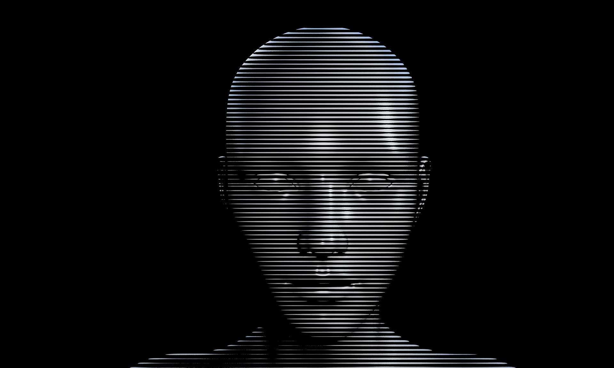
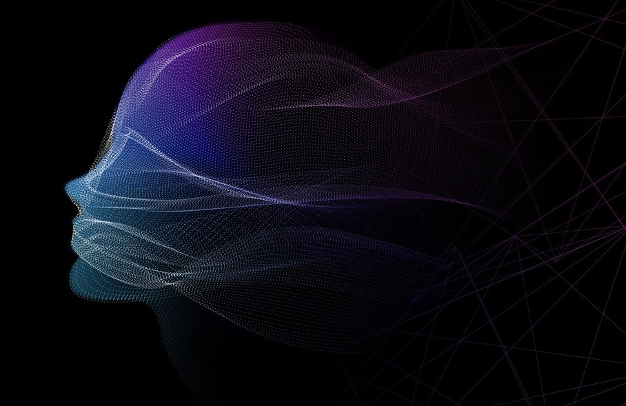

Explorando a Interseção entre Humanos e Máquinas
Fev 23, 2024
Bem-vindo(a) à nossa jornada pela inteligência artificial (IA) e à busca incessante por compreender e fortalecer a interseção entre humanos e máquinas. Este blog, "Construindo Pontes entre Humanos e Máquinas", é uma plataforma dedicada a explorar os avanços, desafios e possibilidades emocionantes que a IA oferece à humanidade..
Nosso objetivo é proporcionar uma compreensão mais profunda da IA e seu impacto em nossas vidas diárias, enquanto buscamos construir pontes que unam os mundos humano e artificial. Acreditamos firmemente na importância de uma abordagem inclusiva e ética para o desenvolvimento e aplicação da IA, e é nessa base que construímos nossa jornada.
Neste espaço, você encontrará uma variedade de conteúdos, desde artigos informativos e análises de tendências. Nosso foco está em tornar a IA acessível e compreensível para todos, independentemente do nível de conhecimento prévio.
Junte-se a nós enquanto exploramos os horizontes em rápida evolução da inteligência artificial, discutimos as questões éticas e sociais que surgem com seu uso e celebramos as inúmeras maneiras pelas quais a IA está moldando nosso mundo para melhor.
Tendências Emergentes na Inteligência Artificial: Moldando o Futuro da Tecnologia e da Sociedade
Fev 26, 2024
A inteligência artificial (IA) está em constante evolução, e é importante ficar atualizado sobre as tendências emergentes que estão moldando o futuro da tecnologia e da sociedade. Nesta seção, vamos explorar algumas das tendências mais significativas na IA e como elas estão impactando diversos setores e aspectos da vida cotidiana.
1. IA Explicável (Explainable AI):
Uma tendência importante na IA é o desenvolvimento de sistemas explicáveis, que são capazes de fornecer explicações claras e compreensíveis sobre como tomam suas decisões. Isso é crucial para aumentar a transparência e a confiança nas aplicações de IA, especialmente em áreas como saúde, justiça e finanças, onde as decisões podem ter um impacto significativo nas vidas das pessoas.
2. IA Conversacional e Interfaces de Voz:
Com o avanço da tecnologia de processamento de linguagem natural (NLP) e reconhecimento de voz, as interfaces de conversação estão se tornando cada vez mais comuns. Assistentes virtuais, chatbots e sistemas de atendimento ao cliente baseados em IA estão se tornando uma parte integrante da experiência do usuário em uma variedade de plataformas e dispositivos.
3. IA na Saúde:
A aplicação da IA na área da saúde continua a crescer, com avanços significativos em diagnóstico médico, descoberta de medicamentos, gestão de dados de pacientes e muito mais. Espera-se que a IA revolucione a forma como os cuidados de saúde são entregues e transforme a medicina de uma maneira sem precedentes.